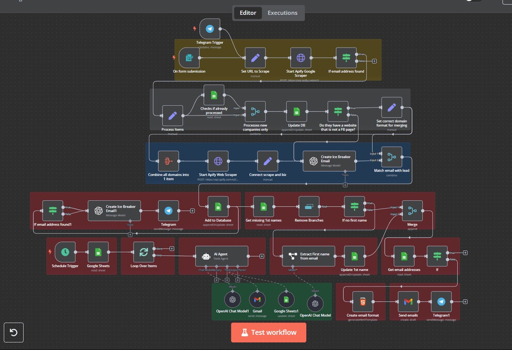

Kobe Christian
I help businesses stay organized and keep moving — managing CRM pipelines, cleaning and consolidating data, coordinating clients and documents, running research, and automating repetitive workflows with Zapier and n8n. Experience spans real estate operations, mortgage support, and remote administrative work.
Who I am
About
I'm Kobe Christian Balatbat — an Operations & Automation Specialist who keeps businesses organized: accurate data, visible pipelines, coordinated clients and documents, and workflows that run without constant chasing.
I've handled the full operations stack — pipelines, data, documents, and people. At any given time I've kept 8+ transactions and 50+ client files moving at once, with 60+ active leads visible in the CRM and 99%+ accuracy on records that had to stay audit-ready.
Whether it's a sales pipeline or a loan pipeline, the job is the same: turn messy, multi-source data into one clean source of truth, keep clients and stakeholders in the loop, and make sure nothing slips through — from first contact to final closing.
My BS Computer Engineering background helps me go beyond admin execution. I build automations in Zapier and n8n that connect CRMs, spreadsheets, and email into hands-off workflows, and use Excel, Google Sheets, Google Apps Script, ChatGPT, Claude, and Copilot to reduce manual work — skills that transfer to any team that needs reliable operations support.

What I bring
Core
Competencies
Building automations with Zapier, n8n, Google Apps Script, and AI tools to reduce repetitive admin, streamline reporting, and keep work moving without manual chasing.
Maintaining CRMs like GoHighLevel with clear stages, status updates, lead visibility, follow-ups, and weekly reporting — proven across sales and loan pipelines.
Cleaning, standardizing, and consolidating data from multiple sources into one accurate, up-to-date source of truth with 99%+ accuracy.
Handling communications, scheduling, follow-ups, and status updates across clients, brokers, and internal teams to keep everyone aligned.
Organizing records, verifying documentation, and keeping files audit-ready and compliant — including sensitive financial information.
Building lead capture and follow-up systems with Zapier or n8n — pulling leads from forms, ads, and websites straight into the CRM with instant, automated responses.
Work history
Experience
Property Research & Real Estate Operations Specialist
Jul 2026 — PresentYourVirtualPartner · Remote
- Reviewed multiple stock lists from agents, developers, and internal databases, then cleaned, standardized, and consolidated the data into one accurate master stock list for the sales team.
- Regularly updated property data to remove sold or off-market listings and add new opportunities, keeping residential and commercial stock information current and usable.
- Conducted targeted property research based on client briefs, including ROI analysis, zoning regulations, comparable sales, upcoming developments, and new project pipelines.
- Gathered market trend intel, recent sales data, and project pipeline updates to support deal sourcing strategies and provide timely sales intelligence.
- Sourced off-market opportunities by calling and emailing agents, builders, and developers to verify stock availability and request exclusive or upcoming listings.
- Built and maintained a structured database of reliable industry contacts to support consistent broker and developer outreach.
- Designed professional, branded property brochures in Canva for residential listings and commercial assets, incorporating property specs, images, floor plans, and compelling copy.
- Coordinated 8+ simultaneous residential and commercial transactions end-to-end while maintaining visibility for 60+ active leads in GoHighLevel through real-time deal stage updates and weekly status reports.
Professional Development
Dec 2025 — Jun 2026Career Break · Upskilling & Project Building
- After my previous role ended, I used this period intentionally to invest in professional growth, strengthen my technical skills, and prepare for my next opportunity.
- I focused on learning automation tools and building workflow-focused projects, including an automated Google Sheets pipeline tracker and a custom task tracker designed to improve organization and efficiency.
- I also explored different CRM systems and business platforms to broaden my operational knowledge and better understand how teams manage pipelines, tasks, client data, and day-to-day processes.
- This was a productive development period that helped me sharpen my problem-solving mindset, expand my toolset, and become more confident in creating systems that support smoother, more efficient work.
Mortgage Broker Associate
Aug 2024 — Nov 2025AU Mortgage Group Company · Remote
- Managed 50+ concurrent borrower files throughout the mortgage application and loan origination support process using Quickli, Infynity, and Apply Online while maintaining 99%+ data accuracy and compliance with documentation requirements.
- Organized and maintained 100+ borrower records, loan files, and closing documents using Microsoft 365 and Google Workspace, keeping files audit-ready and compliant with company standards.
- Supported the processing of 20+ mortgage applications per month by collecting, reviewing, and organizing borrower documentation, income verification records, and supporting materials for underwriting review.
- Coordinated borrower communications, appointment scheduling, follow-ups, and status updates across 5+ active loan officer pipelines, ensuring timely customer service and file progression.
- Assisted with pre-approval preparation, underwriting support, funding coordination, and closing activities while maintaining confidentiality of sensitive financial and personal information for 100+ borrowers.
- Identified workflow inefficiencies and optimized task management processes, improving pipeline visibility and reducing processing delays.
- Supported a pipeline of 50+ active mortgage applications, helping maintain service-level targets and facilitating smooth progression from application through closing.
Academic background
Education
Communication
Languages
What I do
Services
Operations & Admin Support
I handle the day-to-day operational work — scheduling, follow-ups, status updates, inbox and task coordination — so teams can focus on clients and deals instead of admin.
CRM & Pipeline Management
I keep CRMs like GoHighLevel accurate and current — real-time stage updates, lead visibility, follow-up tracking, and weekly status reports across sales and loan pipelines.
Data Cleanup & Consolidation
I clean, standardize, and merge data from multiple sources into one accurate source of truth, then keep it updated — from property stock lists to client and borrower records.
Automated Lead Generation
I build automated lead generation systems using Zapier or n8n — capturing leads from forms, ads, and websites, enriching contact data, routing them into the CRM, and triggering instant follow-ups so no lead goes cold.
Document & File Support
I organize files, review and verify documentation, and keep records audit-ready — including experience with mortgage files, income verification, underwriting prep, and closing coordination.
Workflow Automation & Design
I build automated workflows in Zapier and n8n — connecting CRMs, forms, spreadsheets, and email — to eliminate repetitive admin and reporting tasks, and design branded materials like property brochures and client templates in Canva.
Credentials
Certifications
My Work
Selected
Projects

Automated Lead Generation System
An end-to-end lead generation engine built in n8n. It generates leads from search terms, updates a spreadsheet in real time, scrapes each company's website for relevant services, composes personalized ice-breaker outreach with AI, sends the emails, and handles follow-ups and auto-replies — hands-off from search to inbox.

Workflow Pipeline Tracker
A workflow-focused task and pipeline tracker built to organize priorities, monitor activity, and improve day-to-day operational follow-through.

Property Management Bookkeeping
An automated real estate operations system for organizing property data, rent rolls, income, expense logs, and portfolio records.
Let's connect
Contact
Need reliable support with operations, CRM pipelines, data management, research, or document coordination? Reach out through any of the channels below.